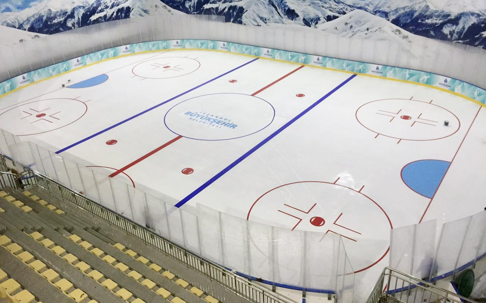

Mighty Ducks Hockey League
RULES OF PLAY & POLICIES
IHF rules shall govern MDHL play except as modified herein.
-
SPORTSMANSHIP
The common interest that members of the Association share is to inspire youth to practice the ideals of sportsmanship and fair play. Any player, coach, team, parent, spectator, administrator or referee whose behavior detracts from this purpose is subject to disciplinary action regardless of technical hockey background, expertise, accomplishments or standing.

-
IHF FIELD REGULATIONS
-
DIMENSIONS.
IHF Law 1 provides for flexible external field dimensions within a given maximum and minimum width and length. These dimensions should be adhered to for all fields used by teams under 12 and older.
 -
COMPETITION FIELDS.
Fields used within the competition program must be a minimum of 100 x 60 yards.Leagues, districts or associations participating in the state competition program that are unable to provide a field that meets these minimum requirements must advise the State Competition Board which will assign its Fields Committee to inspect the field and recommend to the Board whether or not a waiver of the minimum dimensions should be granted. Teams from leagues, districts or associations that are unable to provide an acceptable field may be required to play all their games away.
-
FIELDS USED BY YOUNG AGE GROUPS
- U-6 play on a field approximately 20 X 40 yards with no penalty areas. Fields for older age groups should be progressively larger.
- U-8 plays on a field 40-50 yards in length and 20-30 yards width.
- U-10 play on a field 70-80 yards in length and 40-50 yards in width.
- In addition, fields used by young age groups may have their internal dimensions and size of goal similarly modified.
-
-
ALL-PLAY
All-play means that every recreation player on every team shall play atleast fifty percent of each game. Coaches in the competition program are encouraged to play their players 50% of each game.
- A Coach shall be permitted to not play a player 50% of each game under special circumstances, e.g., unexcused absences from practice and/or games, ungentlemanly conduct at practice and/or games, and injuries.